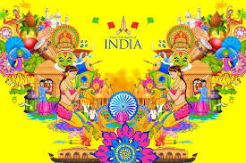

Introduction
India, officially the Republic of India, is a country in South Asia. It is the seventh-largest country by area, the second-most populous country, and the most populous democracy in the world. Bounded by the Indian Ocean on the south, the Arabian Sea on the southwest, and the Bay of Bengal on the southeast, it shares land borders with Pakistan to the west; China, Nepal, and Bhutan to the north; and Bangladesh and Myanmar to the east. In the Indian Ocean, India is in the vicinity of Sri Lanka and the Maldives ; its Andaman and Nicobar Islands share a maritime border with Thailand and Indonesia.
History
India is home to one of the oldest civilizations in the world. From the traces of hominoid activity discovered in the subcontinent, it is recognized that the region has been inhabited since prehistoric times. The earliest archaeological site in the subcontinent is the Bhimbetka rock shelters, and other Paleolithic archaeological sites associated with stone tools and evidence of food gathering have been found in Sohagpur, in Madhya Pradesh.
Culture
India's cultural heritage is expressed in numerous forms of art such as dance, music,
riddles, and songs, and many other customs and traditions. It was introduced to the world
through the works of foreign travellers, traders and sailors who visited the country in the 16th
and 17th centuries. The British East India Company established a trading post in Surat in
1612 and followed it up with similar establishments in Madras (Chennai) and Bombay
(Mumbai) by 1661. The British presence in India increased further when the British
East India Company defeated the Mughal Emperor
Babur in the Battle of Plassey in 1757, and took
control of large areas of India after its victory in the Battle of Buxar in 176
4. The British East India Company gradually
expanded its territories and established a system of
residencies in the Indian states. The British Crown assumed direct control of India
in 1858, after the Indian Rebellion of 1857.
Heritage
India's cultural heritage is expressed in numerous forms of art such as dance, music
riddles, and songs, and many other customs and traditions. It was introduced to the world
through the works of foreign travellers, traders and sailors who visited the country in the 16th
and 17th centuries. The British East India Company established a trading post in Surat in
1612 and followed it up with similar establishments in Madras (Chennai) and Bombay
(Mumbai) by 1661. The British presence in India increased further when the British
East India Company defeated the Mughal Emperor
Babur in the Battle of Plassey in 1757, and took
control of large areas of India after its victory in the Battle of Buxar
4. The British East India Company gradually
expanded its territories and established a system of
residencies in the Indian states. The British Crown assumed direct control of India
in 1858, after the Indian Rebellion of 1857.
Tourism
India is home to several world heritage sites and is the second most popular
tourist destination in the world according to World Tourism Organization. The country
received 8.03 million foreign tourist arrivals in 2013, the
13th most visited country in the world. Tourism in India has significant
potential due to the rich cultural and historical heritage, variety of wildlife, exotic locations
and mild climate. The Government of India is promoting tourism in India.